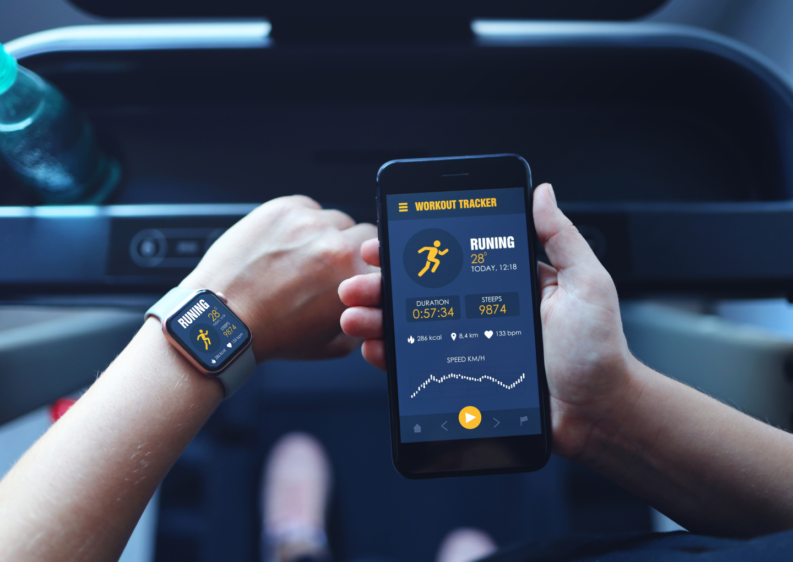
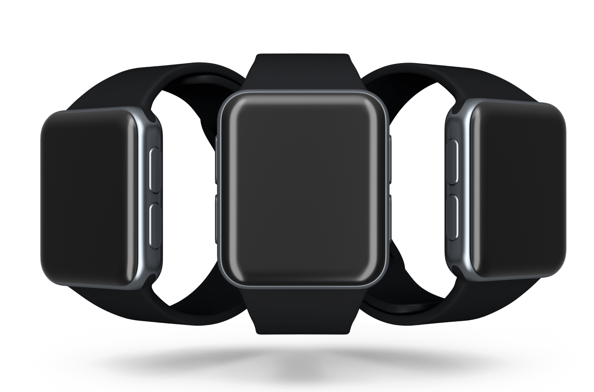
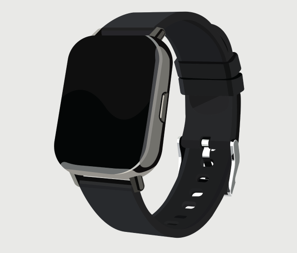
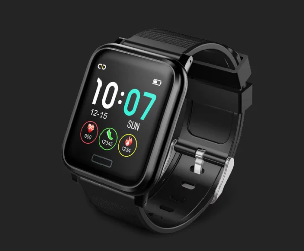

MY WATCH

My Watch
Connectez My-Watch à votre smartphone et faites de votre montre connectée un objet adapté à votre look en personnalisant le cadran et en changeant de bracelet au gré de vos envies.

Connectivité
Aujourd’hui nous vous dévoilons la nouvelle My-Watch. La toute dernière smartwatch Premium séduit par l’incroyable durée de fonctionnement de sa batterie, la connectivité LTE qui la rend autonome, ses multiples fonctions pour le fitness et le wellness ainsi que son design intemporel et personnalisable. Les utilisateurs peuvent en effet choisir parmi trois modèles haut de gamme: Silver, Midnight Black et Rose Gold. Le large choix de bracelets interchangeables leur permet également d’exprimer leur style personnel.
